P179 review gallery — basic baseline → Stitch target → native final
Side-by-side for the four screens the P179 mission names explicitly. "Basic baseline" is P166's
pre-Stitch spike screenshot (P177 itself did not capture new screenshots — its own scope was
financial-write runtime verification, reusing P173's UI). "Stitch target" is P174's accepted
Foil golden-five export. "Native final" is captured this session (P179) against the P178
dark-first implementation, after the fixes this review made (see
P179_OWNER_UI_REVIEW.md).
Collection
Native final shows the rich P158 fixture (40 holdings) — see the review doc's fixture-tooling note.
Basic baseline (P166)
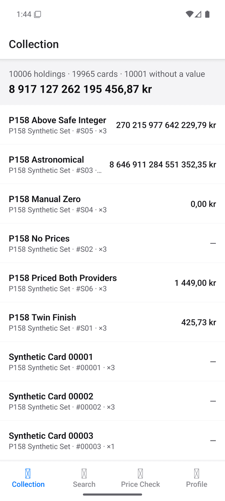
Stitch target (P174 Foil)
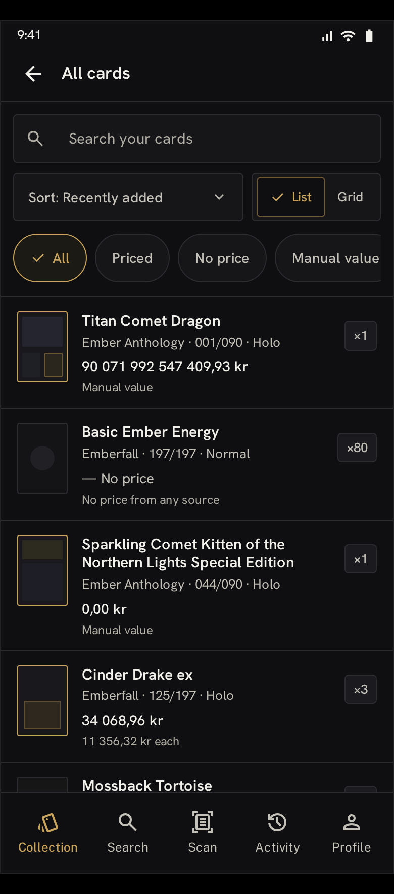
Native final (P179)
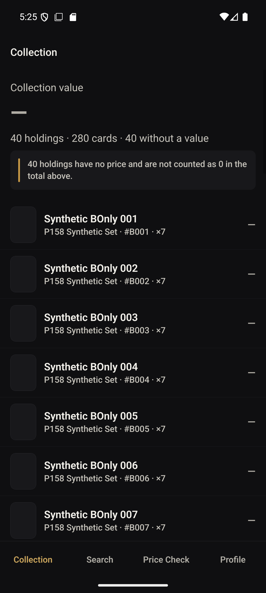
Card detail
Native final uses the "Astronomical" stress-value holding — see the money-stress findings in the review doc.
Basic baseline (P166)
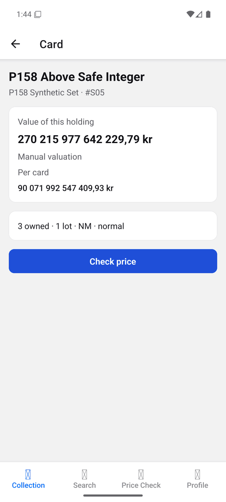
Stitch target (P174 Foil)
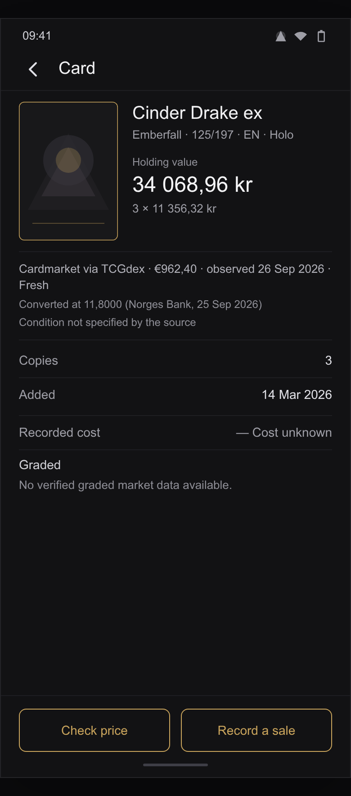
Native final (P179)
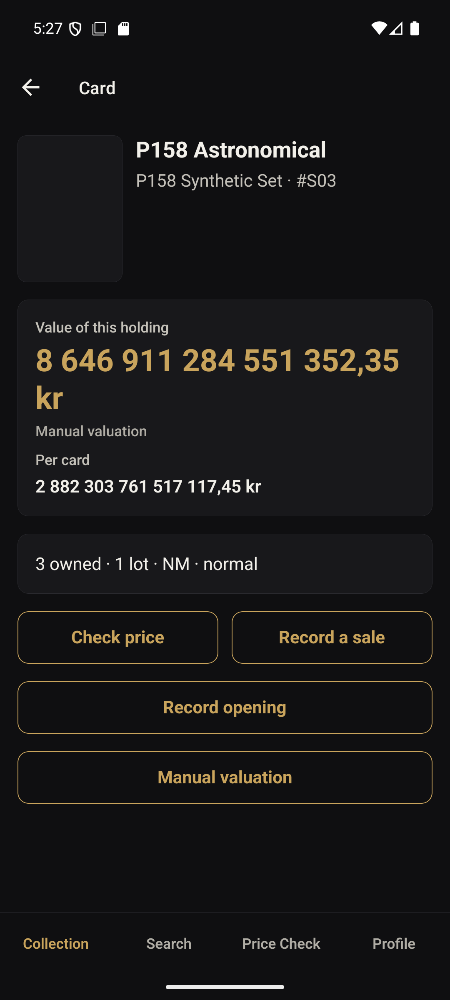
Price Check
Confirmed state: honest "no price for this printing" messaging, freshness timestamp, graded-unavailable block.
Basic baseline (P166)
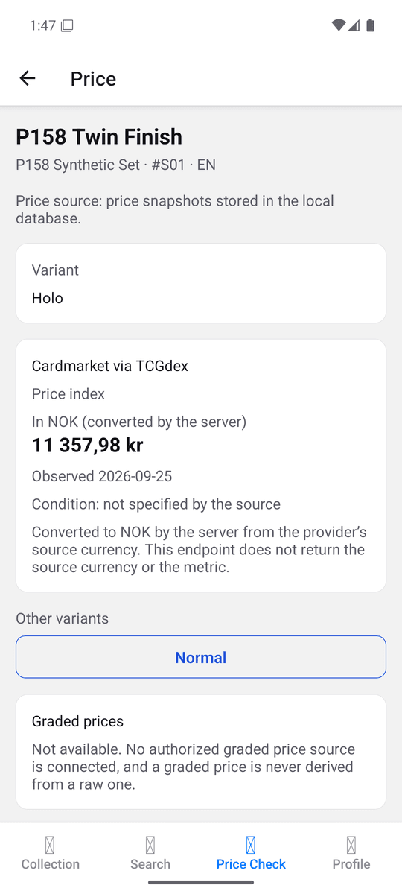
Stitch target (P174 Foil)
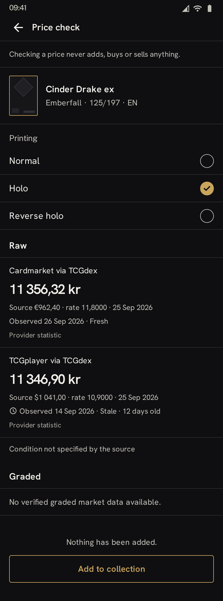
Native final (P179)
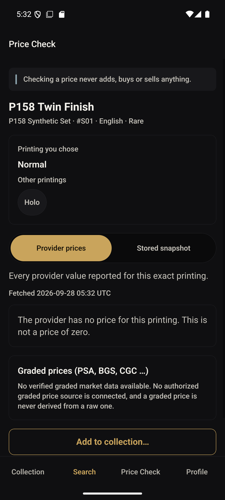
Record purchase
No basic-baseline shot exists for this write form (it postdates the P166 spike). Stitch target shown for reference only.
No P166 baseline for this screen
Stitch target (P174 Foil)
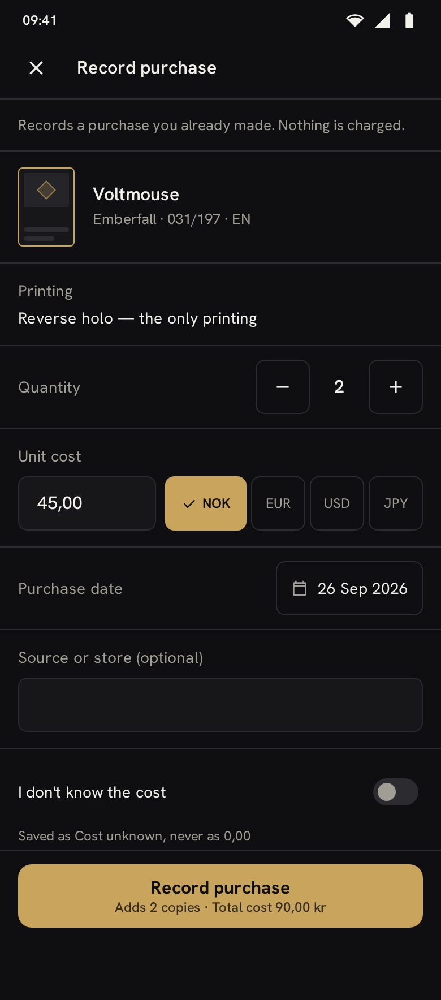
Native final (P179)
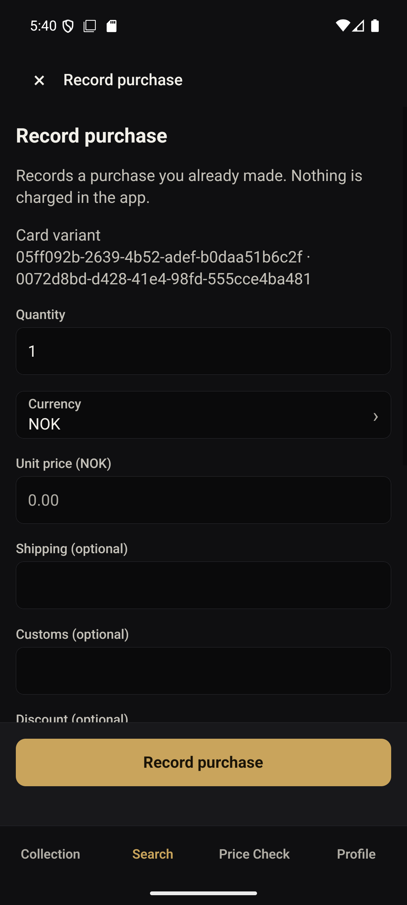
Additional P179 evidence (not in the mission's four-screen set, kept for completeness)
Cold launch, before the P179 fix

Cold launch, after the fix
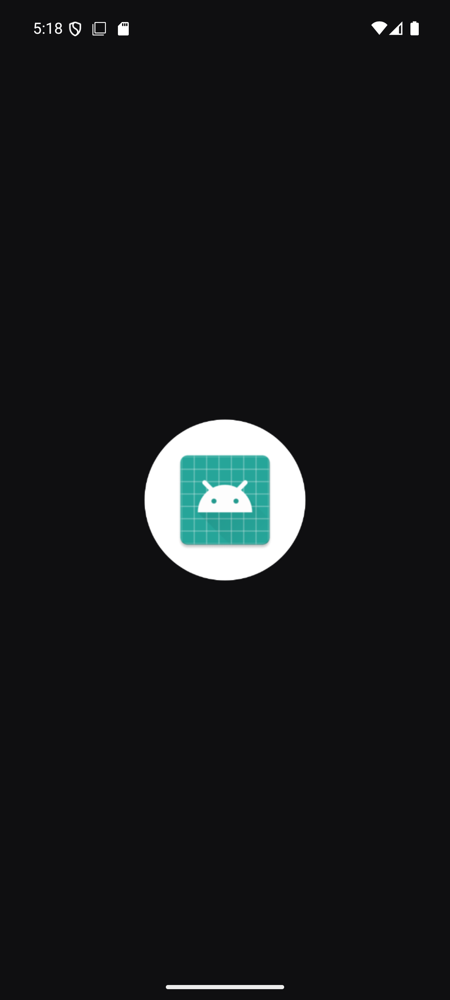
Card detail, absent price
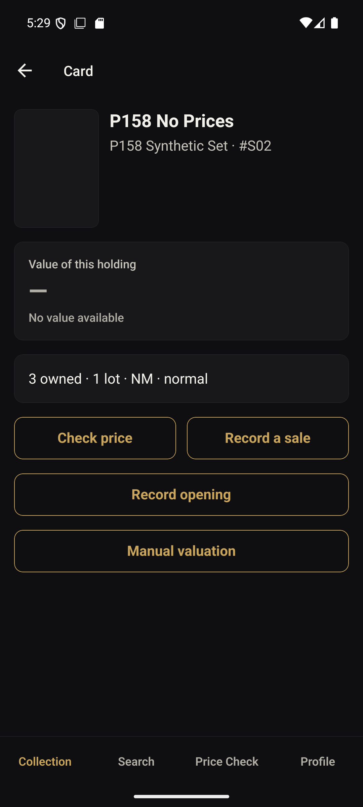
Card detail, font scale 2.0
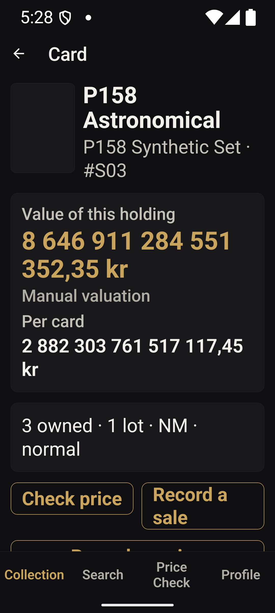
Record opening, nothing to open
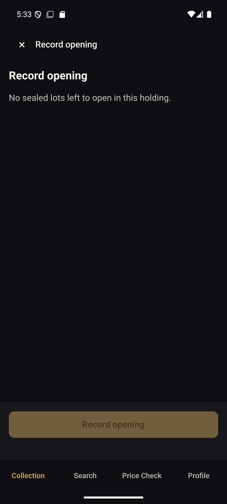
Manual valuation, saved
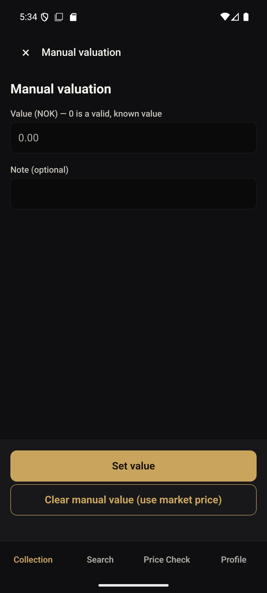
Profile, Dark
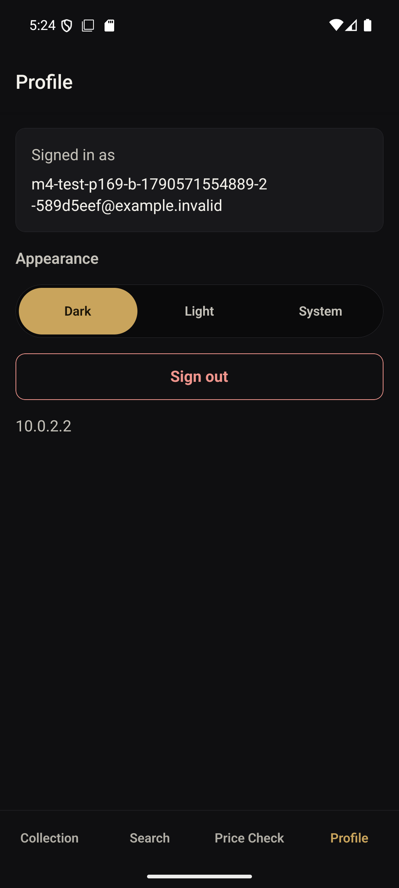
Profile, Light
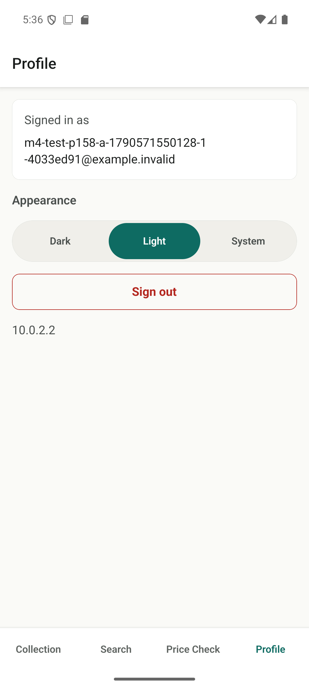
Search results
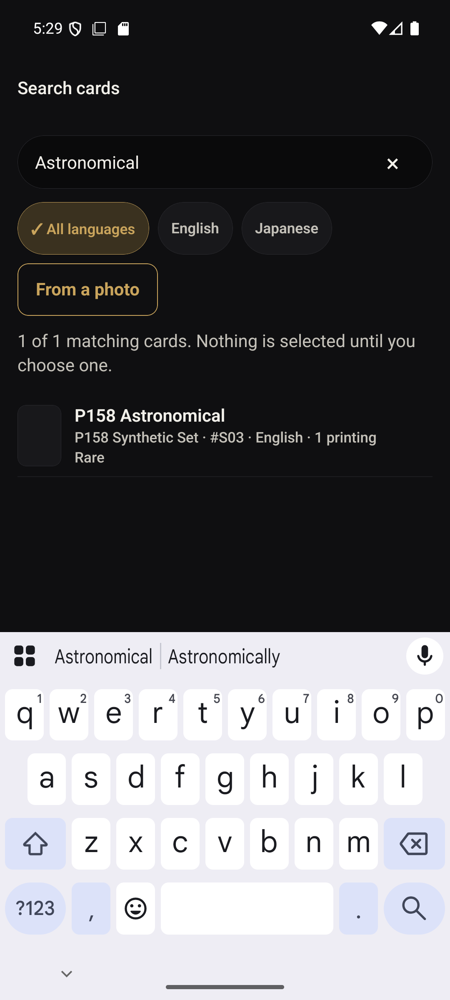